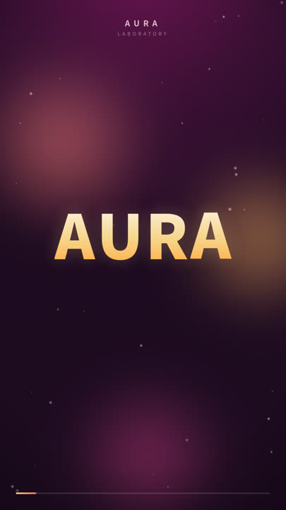
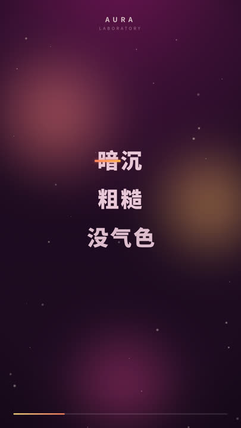
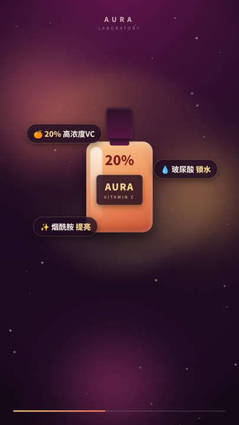
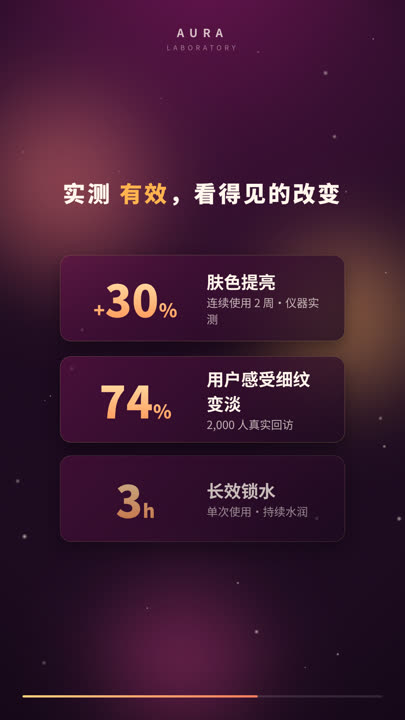

Research · Real Test
用 Coding Agent 写 HTML 做电商短视频，到底行不行？
与「图生视频 agent 工作流」的可复现实测对比 · Claude Code 自主完成 · 2026-06-19
结论：行。在带货型电商短视频里，coding agent 写 HTML/CSS/JS 直出视频的路线，
在信息准确、可控、成本、可批量上整体优于图生视频；在要实拍质感的品牌片里图生视频反超。
下方这支 9:16 成片，就是本次真的渲染出来的产物（非示意）。
① 真实产物：本次渲染的成片
- 规格1080×1920 · 30fps · 15.00s · H.264
- 体积≈3.2MB（无声母版）
- 出片方式HTML→Puppeteer 逐帧→ffmpeg
- 一次渲染450 帧 ≈ 7 分钟 · 0 API 费
- 文字/价格逐字像素级精确（¥199→¥149）
- 可复现性同输入逐帧 bit 级一致
- 产品瓶纯代码绘制 · 全程零漂移
- 字体Noto Sans SC（项目自带）
两个版本在 output/：无声母版（投放时配热门音轨）+ 含程序化背景乐的预览版。
② 六段分镜（关键帧）

钩子 · 品牌

痛点

产品主秀

功效实证
口碑
促销 + CTA
③ 对比结论：换用途，结论会翻转
带货 / 转化信息流广告
重「信息准确 · 可控 · 成本 · 规模」
4.34 HTML/代码 胜
图生视频 AI：3.29 / 5
品牌故事 / 实拍质感 TVC
重「真实感 · 情绪 · 原生音画」
3.76 图生视频 AI 胜
HTML/代码：3.68 / 5
④ 10 维评分卡（1–5 分）
| 维度 | 权重 | HTML/代码 | 图生视频 AI |
|---|
| 文字/价格/品牌逐字准确 | 15 | 5 | 3 |
| 产品还原与时序一致性 | 12 | 4 | 3 |
| 创意可控性 / 精确可编辑 | 12 | 5 | 3 |
| 可复现性 / 确定性 | 8 | 5 | 2 |
| 批量与个性化规模 | 10 | 5 | 3 |
| 单条成本 | 10 | 5 | 3 |
| 出片 / 迭代速度 | 8 | 4 | 4 |
| 真实感 / 实拍质感 / 物理 | 12 | 2 | 5 |
| 原生音频 / 口播 | 5 | 3 | 4 |
| 合规 / 版权 / 可审计 | 8 | 5 | 3 |
完整依据、客观指标表与方法学见 report/comparison-scorecard.md；
HTML 侧多项为本仓库实测，图生视频侧为 2026 公开资料 + 范式特性判断（未在本环境实跑，见下方诚实声明）。
⑤ 推荐：生产级混合工作流
- AI 生成"难拍的料"：实拍质感 b-roll、模特上脸、质地特写、氛围镜头。
- coding agent 当合成 + 信息层：用 HTML/CSS/JS（或 Remotion）把片段 + 真实产品图 +
逐字准确的价格/卖点/CTA/字幕合成成片——信息层绝不交给生成模型写字。
- 数据驱动批量：价格/赠品/语言/话术抽成参数表，一套模板批量出千条变体。
- 确定性收尾：合成与字幕在代码侧完成 → 可复现、可审计、投放零事故。
一句话：让 AI 负责「像真的」，让代码负责「准且多」。
⑥ 自己复现 / 补齐对比
cd research/coding-agent-html-video/pipeline
npm install # puppeteer + ffmpeg-static
npm run render:ad # -> ../output/ecommerce-ad-1080x1920.mp4
node preview.mjs scenes/ecommerce-ad.html "1.2,3.6,6.5,9.8,11.9,14.2" # 看关键帧
B 组（图生视频）：把 assets/shared-brief.md 第 5 节的 prompt 包贴给 Sora/Veo/Kling/Runway/即梦，
产出后用同一张评分卡的客观指标表回填，即得你环境下的对称结论。
诚实声明：HTML/代码一侧是真实渲染产物（可逐帧核验）。图生视频一侧因本容器无 API 密钥、
出网受白名单限制而未实跑，分数基于 2026 公开评测 + 范式特性；模型版本/价格变动快，采购前请再核。
参考：Remotion 官网、vexub / digen.ai / lushbinary / aimlapi / Kling AI 等 2026 评测（详见 REPORT.md 参考文献）。